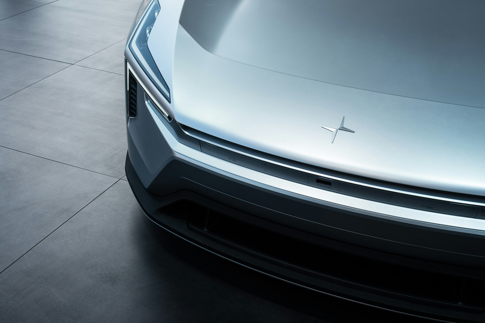
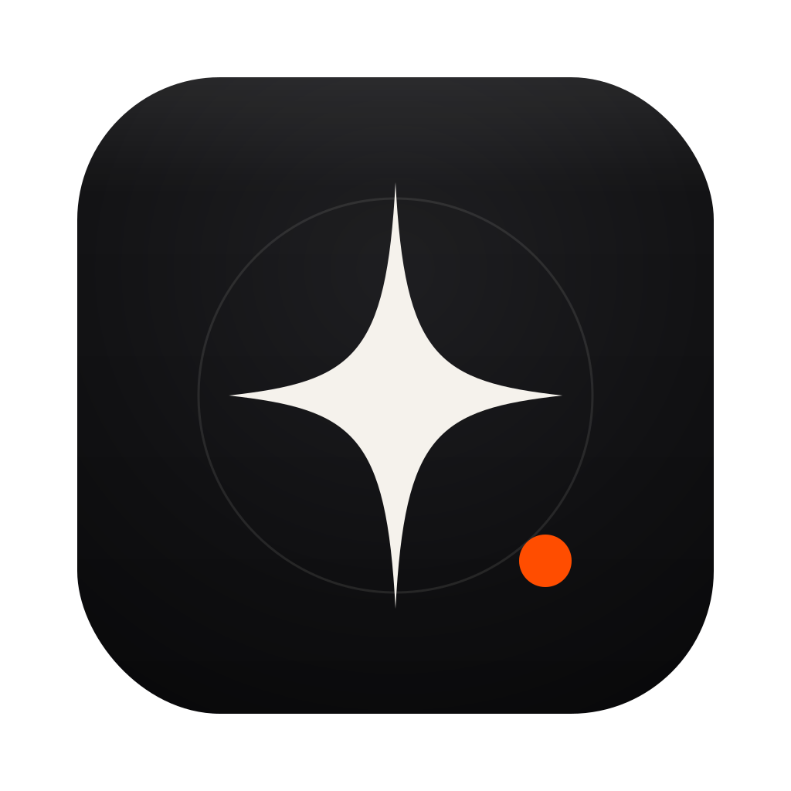
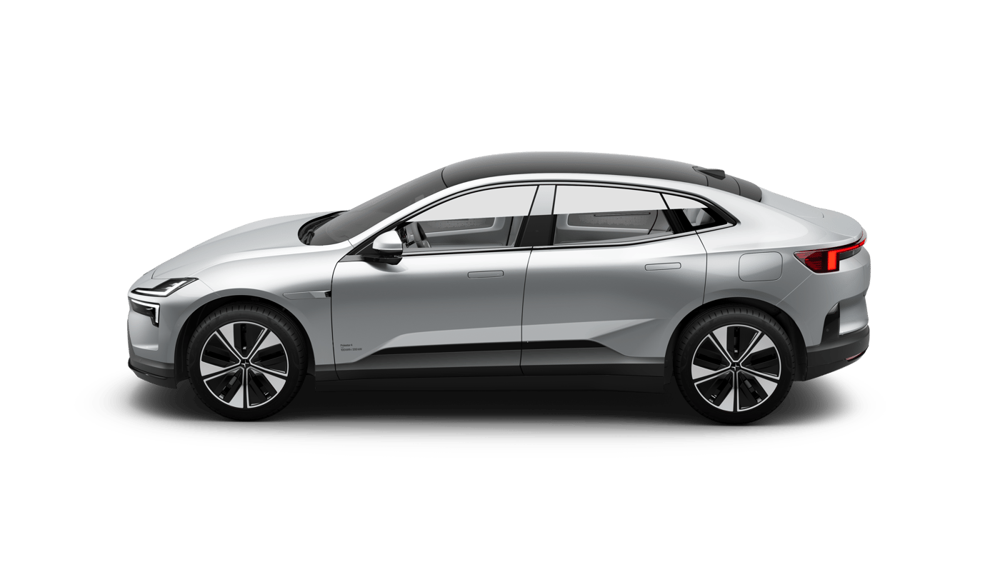

Glanceable state of charge
Battery %, range, charging status and time-to-full. You choose what the menu bar shows.


Battery, range and charging status — always one glance away. It taps you on the shoulder when charging finishes, and stays out of the way the rest of the time.
Signs in with your Polestar account, keeps the session in the Keychain, and talks to nothing but Polestar's own API.
Battery and range quietly update every five minutes.
Once you plug in, Polaris checks every minute so the numbers keep up.
Your data travels between your Mac and Polestar — nowhere else.
Polaris compares each refresh with the last one, so a banner only shows up when something actually changed — plugged in, finished, or the charger threw an error. Nothing else pings you, and each of the three is its own switch in Settings.
Battery %, range, charging status and time-to-full. You choose what the menu bar shows.
A quiet nudge when charging starts, completes, or the charger reports a fault. Nothing else, ever.
Password and session live in the macOS Keychain. Once signed in, Polaris resumes its session without logging in again.
OAuth2/OIDC with PKCE against Polestar's own endpoints. No third-party servers, no analytics, no tracking.
Polaris updates itself. New versions arrive over a signed appcast — Sparkle refuses anything whose signature doesn't match — and you install with one click. Turn it off in Settings.
MIT licensed, pure AppKit, no Electron, no SwiftUI, no background
services. make app and you have it.

The studio render of your exact configuration — paint, wheels and all —
fetched straight from Polestar and shown at the top of the menu.
No terminal, no Xcode — every release is a ready-built app that opens like any other. Sign in with your Polestar account and Polaris is in the menu bar.
brew install --cask simonbusborg/polaris/polaris
git clone https://github.com/simonbusborg/polaris && cd polaris && make app
xcode-select --install).open Polaris.app, or move it to Applications first.
A local build isn't notarized, so the first
launch wants a right-click → Open.